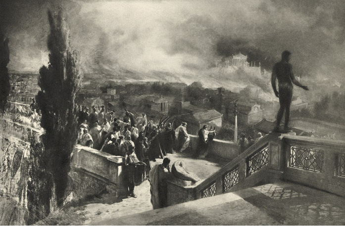

XLVII
Oheň tou dobou dospěl až k Via Nomentana a od ní spolu se změnou větru obrátil se k Via Lata1 a k Tibru, obešel Kapitol, rozlil se po Forum Boarium, a niče všecko, čemu se v prvním rozmachu vyhnul, blížil se opět k Palatinu. Tigellinus, shromáždiv všecky síly praetoriánů, posílal rychlé posly jednoho za druhým k blížícímu se Caesarovi, oznamuje, že z nádhery podívané ničeho neztratí, jelikož požár se ještě vzmohl. Ale Nero chtěl doraziti v noci, aby tím lépe se pokochal obrazem hynoucího města. Za tím účelem zdržel se v okolních vesnicích Aqua Albana, a obeslav si do stanu tragika Alitura, cvičil se za jeho přispění v postavě, tváři, vzezření a učil se přiměřeným pohybům, prudce se s ním hádaje, má-li při slovech: „Ó, město svaté, jež ses zdálo trvalejším Idy2“ vysoko zvednouti obě ruce, nebo má-li svěsiti jednu ruku, drže v ní formingu, podél těla a zvednouti jen druhou. A ta otázka mu připadala v té chvíli důležitější nežli všecky ostatní. Vyraziv konečně za soumraku, vyžádal si ještě rady Petroniovy, neměl-li by do básně, věnované pohromě, vložiti několik skvělých rouhavých narážek proti bohům a zdali by se taková slova, je-li věc posuzována ze stanoviska umění, nevydrala sama sebou v takové situaci z úst člověka, jenž ztrácí vlast.
Kolem půlnoci konečně se přiblížil ke hradbám i se svým přečetným dvorem, skládajícím se z celých zástupů dvořanů, senátorů, rytířů, osvobozenců, otroků, žen i dětí. Šestnáct tisíc praetoriánů, sestavených cestou do bojovného šiku, bdělo nad klidem a bezpečím jeho vjezdu, udržujíc zároveň v přiměřené vzdálenosti vzbouřený lid. Lid sice klel, křičel a hvízdal, dívaje se na průvod, ale neodvažoval se udeřiti na něj. Na mnohých místech však se ozval i potlesk, opatřený luzou, která ničeho nemajíc, při požáru o nic nepřišla a doufala v hojnější rozdávání obilí, oleje, šatstva a peněz nežli jindy. Konečně byly výkřiky a hvízdání právě tak jako potlesk přehlušeny hlaholem polnic a rohů, do kterých dal zadouti Tigellinus. Nero, projev branou Ostijskou, zastavil se na chvíli a řekl: „Já, domova zbavený vladař lidu, domova zbaveného, kam složím na noc svoji nešťastnou hlavu!“ – načež projev skrze Clivus Dalphini, vystoupil po schodech, pro něho připravených, na vodovod Appiův a za ním Augustiani i sbor zpěváků, nesoucích kytary, loutny a jiné hudební nástroje.
A všichni zatajili dech v prsou, čekajíce, nepromluví-li nějakých velikých slov, která bylo záhodno zapamatovati si pro vlastní bezpečnost. Ale on stál velebný, něm, oděn v purpurový plášť a maje věnec ze zlatého vavřínu, a díval se do rozzuřeného běsnění plamenů. Když mu Terpnos podal zlatou loutnu, zvedl oči k nebi, zalitému požárovou září, jako by čekal vnuknutí.
Lid si z dálky ukazoval na něho, zalitého krvavým jasem. V dáli syčeli hadi plamenů a hořely odvěké, nejposvátnější památky: hořel chrám Herkulův, který vystavěl Evander, i chrám Joviše Statora i chrám Luny, zbudovaný ještě za Servia Tullia, i dům Numy Pompilia i svatostánek Vestin s penáty3 římského lidu; ve hřívách plamenů ukázal se občas Kapitol, hořela minulost i duše Říma – a on, Caesar, stál s loutnou v rukou, s tváří tragického herce a s myslí nikoli na hynoucí vlast, nýbrž na postavu a pathetická slova, jimiž by nejlépe mohl vylíčiti velikost pohromy, vzbuditi největší obdiv a docíliti nejnadšenějšího potlesku.
Nenáviděl toho města, nenáviděl jeho obyvatelů, miloval jen své písně a verše, a proto se radoval v srdci, že konečně spatřil tragédii, podobnou oné, kterou popisoval. Veršotepec se cítil šťasten, přednašeč cítil se nadšen, vyhledavač silných dojmů opojoval se hrůzným pohledem a s rozkoší myslil na to, že ani zkáza Troje nebyla ničím proti zkáze tohoto ohromného starobylého města. Čeho si mohl ještě přáti? Hle, hoří Řím, Řím světovládný, a on stojí na obloucích vodovodu, se zlatou loutnou v rukou, viděn, pln nachu, obdivován, velkolepý a poetický! Kdesi tam níže, v soumraku, reptá a bouří se lid! Ale ať si jen reptá! Věky uplynou, tisíciletí přejdou a lidé budou vzpomínati a oslavovati básníka, jenž za takové noci opěval pád a požár Troje. Čím je proti němu Homér? Čím je sám Apollo se svou dutou formingou?
Tu zdvihl ruce, a udeřiv ve struny, ozval se slovy Priamovými:
„Ó, hnízdo otců mých, ó, kolébko drahá…“
Jeho hlas na volném vzduchu za hučení požáru a při vzdálené vřavě tisícerých davů vypadal ku podivu mizivý, třesoucí se a slabý, zpěv sboru pak zněl jako bzučení mouchy. Ale senátoři, úředníci a Augustiani, shromáždění na vodovodu, svěsili hlavy, naslouchajíce v zamlklém nadšení. On pak zpíval dlouho a vyvolával u sebe náladu stále žalostnější. V okamžicích, kdy ustával, aby nabral dech, sbor zpěváků opakoval poslední verše, načež Nero opět pohybem, jemuž se naučil od Alitura, shazoval s ramene „sirmu“4, přejížděl po strunách a pokračoval ve zpěvu. Konečně skončiv píseň, dříve již složenou, začal improvisovati, hledaje velké srovnání s obrazem, jaký se před ním rozvíjel. A tvář se mu začala měniti. Nebyl arci hluboce dojat zkázou otcovského města, ale byl opojen a hluboce dojat pathosem vlastních slov do té míry, že pojednou loutnu hřmotně upustil k nohám, a zahaliv se do „sirmy“, zůstal jako zkamenělý, podobaje se jedné z oněch soch Niobovců, které zdobily nádvoří Palatina.
Po krátké chvíli odmlčení zaburácela bouře potlesku. Ale z dálky odpověděl mu řev davů. Nyní již nikdo nepochyboval, že Caesar nařídil, aby to město bylo spáleno, aby si vystrojil podívanou a zpíval při ní písně. Nero uslyšev tu vřavu statisíců hlasů, obrátil se k Augustianům se smutným, resignace plným úsměvem člověka, jemuž se děje křivda, a řekl:

Ozval se slovy Priamovými: „Ó, hnízdo otců mých, ó, kolébko drahá!“
„Hle, kterak si Quirité dovedou vážiti mne a poesie!“
„Lotři!“ odpověděl Vatinius. „Rozkaž, pane, praetoriánům, aby se na ně vrhli!“
Nero se obrátil k Tigellinovi:
„Mohu spoléhati na věrnost vojáků?“
„Ano, božský!“ odpověděl praefekt.
Ale Petronius pokrčil rameny.
„Na jejich věrnost ano, ne však na jejich počet!“ řekl. „Zůstaň zatím zde, kde jsi, protože je zde nejbezpečněji, ale je nutno upokojiti ten lid.“
Téhož mínění byl i Seneka i konsul Licinius. Zatím se dole vzbouření vzmáhalo. Lid se ozbrojoval kamením, tyčemi od stanů, prkny od vozů a ručních vozíků a různými železnými předměty. Po nějaké době přišlo několik náčelníků kohort5 s oznámením, že praetoriáni, na něž davy dotíraly, udržují jen s největším napětím bitevní čáru, a nemajíce rozkazu k útoku, nevědí, co činiti.
„Bohové!“ řekl Nero. „Jaká to noc! Z jedné strany požár, z druhé rozbouřené moře lidu.“
A začal dále vyhledávati výrazy, jež by nejskvěleji mohly vystihnouti nebezpečí okamžiku, ale vida dokola bledé tváře a neklidné pohledy, taktéž se zalekl.
„Podejte mi tmavý plášť s kápí!“ zvolal. „Což by opravdu mělo dojíti ke srážce?“
„Pane,“ odpověděl nejistým hlasem Tigellinus, „udělal jsem, co jsem mohl, ale nebezpečí je hrozivé… Promluv, pane, k lidu a učiň mu sliby!“
„Caesar že by měl mluviti k luze? Ať to udělá někdo jiný mým jménem! Kdo se k tomu uvolí?“
„Já!“ klidně odvětil Petronius.
„Jdi, příteli! Jsi mi nejvěrnější v každé tísni…! Jdi a nešetři sliby!“
Petronius obrátil se k průvodu s nevrlou a jízlivou tváří.
„Přítomní zde senátoři,“ pravil, „a kromě nich Piso, Nerva a Senetio pojedou se mnou!“
Potom zvolna sestoupil s vodovodu, ti pak, jež byl vybídl, kráčeli za ním ne bez váhání, ale s jakousi nadějí, která je naplnila pro jeho klid. Petronius, stanuv na úpatí arkád, poručil, aby mu přivedli bílého koně, a vsednuv na něj, rozjel se v čele druhů hlubokými řadami praetoriánskými k černé řvoucí chátře, bezbranný, drže v rukou tenkou hůl ze sloní kosti, o kterou se obyčejně opíral.
A doklusav blízko k davům, pobodl koně do nich.
Kolem dokola při požárové záři bylo viděti zdvižené ruce, ozbrojené zbraní všeho druhu, rozpálené oči, zpocené tváře a řvoucí, zpěněné rty. Rozzuřená vlna ihned obklíčila jej i průvod, za ní pak bylo viděti opravdu moře hlav, zvlněné, zvířené, strašlivé.
Řev se vzmohl ještě více a změnil se v nelidský ryk; obušky, vidle, ano i meče potřásaly se blíže hlavy Petroniovy, dravé ruce se natahovaly po otěžích jeho koně i po něm, ale on vjížděl mezi ně stále hlouběji, chladný, lhostejný, pohrdavý. Chvílemi udeřil holí po hlavách těch nejdrzejších, jako by si razil cestu v obyčejné tlačenici, a ta jeho jistota, ten klid přece jen překvapovaly rozběsněnou chátru.
„Petronius! Arbiter elegantiarum! Petronius…!“
„Petronius!“ zaburácelo to ze všech stran.
A dle toho, jak bylo opakováno to jméno, tváře kolem dokola se stávaly méně hrozivými a vřava méně vzteklá, neboť onen uhlazený patricius, jakkoliv nikdy nebažil po lásce lidu, byl přece jen jeho miláčkem. Byl pokládán za člověka lidského a štědrého a jeho popularita vzrostla zvláště od případu Pedania Secunda, kdy se přimlouval za zmírnění krutého rozsudku, odsuzujícího k smrti všecky otroky praefektovy. Zejména davy otroků měly jej rády od té chvíle s tak nepřekonatelnou láskou, s jakou lidé ponížení a nešťastní obyčejně milují ty, kdož jim dávají najevo aspoň trochu soucitu. Kromě toho v tomto okamžiku přidružila se k tomu i zvědavost, co řekne posel Caesarův, poněvadž nikdo nepochyboval, že Caesar jej vyslal zúmyslně.
On pak, sňav se sebe svoji bílou, šarlatovým okrajem lemovanou tógu, vysoko ji vyzvedl a začal jí mávati nad hlavou na znamení, že chce promluviti.
„Ticho! Ticho!“ voláno ze všech stran.
Za chvíli se opravdu všecko ztišilo. Tehdy se na koni vzpřímil a začal mluviti zvučným, klidným hlasem:
„Občané! Ti, kdož mne uslyší, ať opakují má slova těm, kteří stojí dále, všichni pak ať se chovají jako lidé, a ne jako zvířata v arénách!“
„Posloucháme! Posloucháme…!“
„Nuže, slyšte! Město bude znovu vystavěno. Zahrady Lukullovy, Maecenovy6, Caesarovy i Agrippovy budou vám otevřeny! Od zítřka se začne rozdávati obilí, víno a olej, tak aby každý si mohl nacpati břicho až po hrdlo! Pak vám Caesar uspořádá hry, jakých svět až dosud neviděl a při nichž vás čekají hostiny a dary! Budete bohatšími po požáru nežli před požárem!“
Odpověděl mu hukot, který se šířil od středu na všecky strany, jako se šíří vlny na vodě, do které někdo vhodil kámen; to ti bližší opakovali jeho slova vzdálenějším. Pak se ozvaly tu i tam výkřiky, jež se konečně změnily v jediný, všeobecný, obrovský řev:
„Panem et circenses…!!!7“
Petronius se zahalil do tógy a nějakou dobu naslouchal nepohnut, podobaje se ve svém bílém rouchu mramorové soše. Řev se vzmáhal, přehlušoval hukot požáru, ozýval se ze všech stran a z hlubin stále větších, posel však měl patrně ještě cosi prohlásiti, neboť čekal.
Až konečně, přikázav opět zdviženou rukou, aby nastalo ticho, zvolal:
„Slibuji vám panem et circenses, ale nyní zajásejte k poctě Caesara, který vás šatí, sytí! A pak jdi spát, lide, neboť zanedlouho bude se rozednívati!“
To praviv, otočil koně, a lehce udeřuje holí po hlavách a tvářích oněch, kdož mu stáli v cestě, zvolna odklusal k praetoriánským řadám.
Za chvíli byl pod vodovodem. Nahoře zastihl bezmála poplach. Nebylo tam rozuměno křiku: panem et circences! Mělo se za to, že je to nový výbuch vzteku. Nedoufalo se ani, že by se Petronius mohl zachrániti. Proto také Nero, spatřiv jej, přichvátal až ke schodům a s tváří, pobledlou rozčilením, začal se ptáti:
„Nu, jak? Co se děje? Je již bitva?“
Petronius nabral vzduch do plic, zhluboka si oddychl a odvětil:
„U Polluxe, všichni se potí a zapáchají! Ať mi někdo podá ‚epilimmu‘8, sice omdlím!“
Pak se obrátil k Caesarovi:
„Slíbil jsem jim,“ řekl, „obilí, olej, otevření zahrad a pořádání her. Zase tě zbožňují a řvou vyprahlými ústy na tvoji počest. Bohové, jaký ten plebs má nepříjemný zápach!“
„Měl jsem praetoriány připraveny!“ zvolal Tigellinus. „A kdybys jich nebyl uklidnil, křiklouni by ztichli na věky. Škoda, Caesare, že jsi mi nedovolil, abych použil moci!“
Petronius pohlédl na mluvícího, pokrčil rameny a řekl:
„Ještě není vše ztraceno. Snad budeš jí moci použíti zítra.“
„Ne, ne!“ pravil Caesar. „Dám jim otevříti zahrady a rozdám obilí. Díky ti, Petronie! Hry uspořádám a tu píseň, kterou jsem vám zpíval dnes, zazpívám veřejně!“
To řka, vložil ruku na rameno Petroniovo, chvíli mlčel, až konečně vzpamatovav se, tázal se: „Řekni upřímně: jak jsem se ti zdál, když jsem zpíval?“
„Byl jsi hoden podívané, jako byla podívaná hodna tebe!“ odpověděl Petronius.
Pak se obrátil k požáru.
„Ale ještě se rozhlédněme,“ pravil, „a rozlučme se se starým Římem!“
Široká ulice. ↩︎
Pohoří v Malé Asii. ↩︎
Domácí bůžkové ochraňující rodinu. ↩︎
Dlouhé svrchní roucho, jaké nosili starořečtí herci při tragédiích. ↩︎
Desetina legie, asi 1000 mužů. ↩︎
Starořímský státník, spisovatel a štědrý příznivec literatury z dob římského císaře Augusta v 1. st. př. n. l. ↩︎
Chléb a hry. Heslo starořímského lidu za císařské doby. ↩︎
Osvěžující voňavka. ↩︎